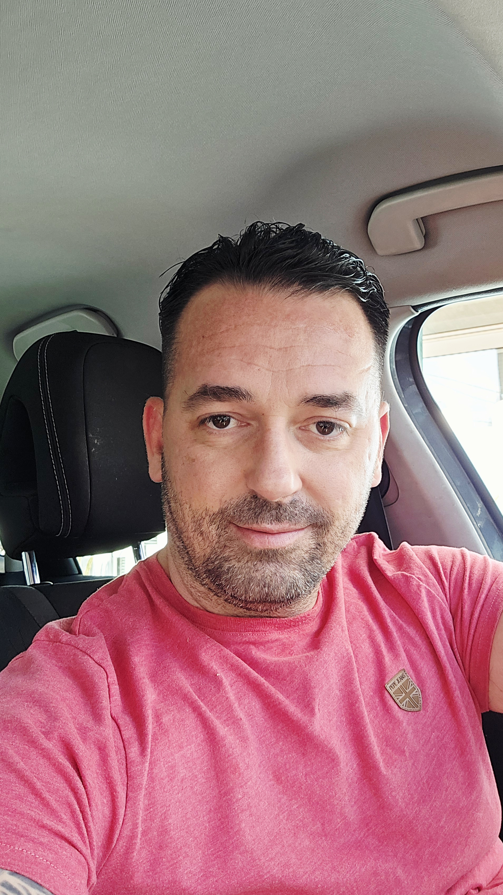

dr. Milorad Paunović

Hej. Ako si ovde, verovatno osećaš da te zove nešto više.
Ja sam Milorad. Sportista, lekar, psihijatar u specijalizaciji. I neko ko je previše puta pitao sebe: „Zar je to to?”
Ovaj sajt nije o meni. Ovaj sajt je o tebi — o onom delu tebe koji zna da može više. Ne više napora, nego više smisla.
Ovo mesto je za tebe ako:
🎯 Imaš osećaj da si zapeo između poglavlja – karijera ti više ne daje ono što je nekad davala, a novo poglavlje još nije počelo.
🧠 Osećaš da ti glava radi sto na sat, ali srce nekad ne zna kuda ide.
❤️ Želiš dublje odnose — ne "veze", nego stvarnu prisnost, onu koja ne beži kad postane stvarno.
🔥 Imaš snove, ali ti treba struktura da ih pretvoriš u stvarnost.
🙏 Tražiš balans između snage i mekoće. Između uspeha i duše.
Šta možeš da dobiješ ovde?
🎙 Podcast koji dira gde boli i leči gde treba — priče, razgovori, trenuci iskrenosti.
💬 Newsletter koji ne šalje savete — već pitanja zbog kojih se pitaš drugačije.
🛠 Alate za mentalnu snagu, emocionalnu jasnoću i duhovni kompas.
📱 A uskoro — PlayMind aplikaciju koja pomaže sportistima (i onima koji se tako osećaju) da pronađu novu pobedu posle karijere.
U šta verujem?
- Biti svoj > biti savršen
- Zajednica > solo put
- Prisnost > prelaženje preko stvari
- Duh iznutra > slika spolja
- Rad na sebi > rad za priznanje
Ako ti je dosta površnosti.
Ako znaš da nisi ovde da odigraš tuđu igru.